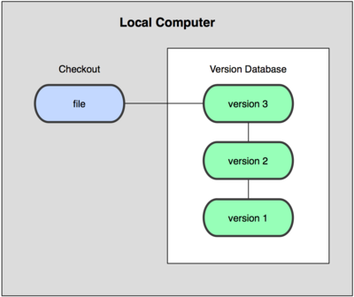
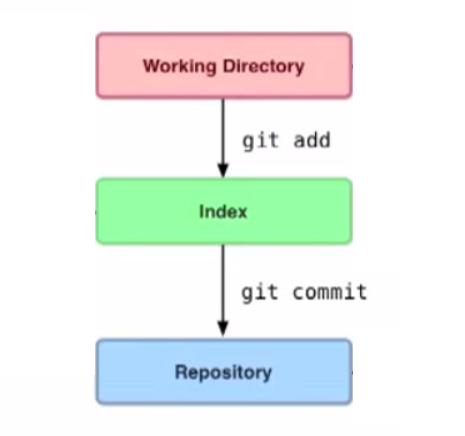
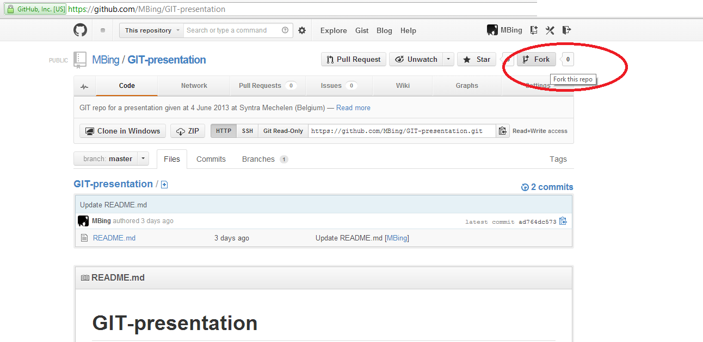
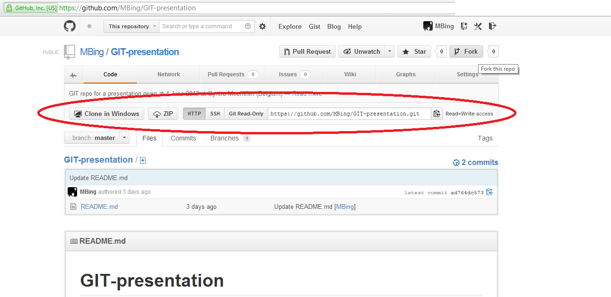
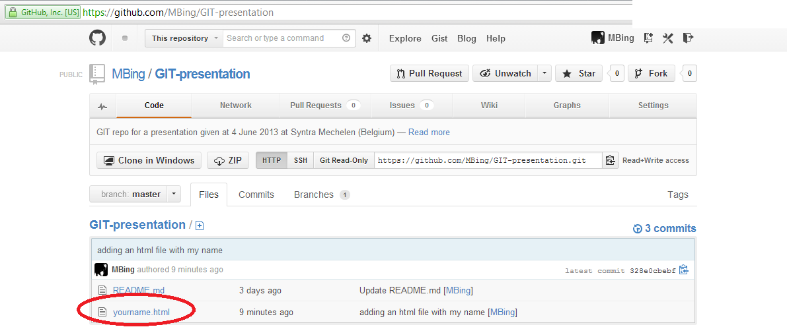
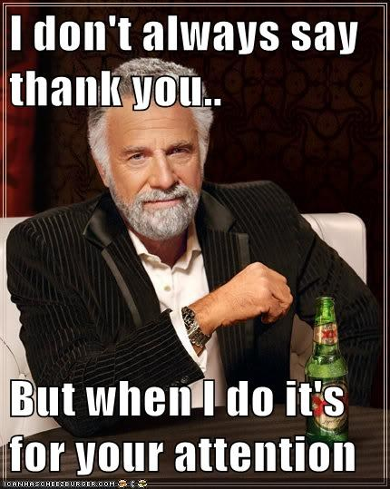

git it on
a hands on presentation by
git what?
- Open Source
- Distributed Version Control System (DVCS)
- (VCS) aka Source Code Management (SCM)
- Tool to keep track of changes (in files)
- Command Line (BASH)
- Supported by UNIX-like systems (Linux, Mac OS X, Solaris) and Windows
Version control systems
- Local
- Centralized
- Distributed
Local version control system
Centralized version control system

distributed version control system

History

- GIT created in 2005 by Linus Torvalds
- Developed on a Linux (what else?)
- Made in 2 weeks
- Why pay if you can build it better (ref. BitKeeper)
- See the man in action: Linus Torvalds on Git
predecessors
- (SCCS) Source Code Control System
1972, closed source (FIFO) - (RCS) Revision Control System
1982, open source (LIFO) - (CVS) Concurrent Versions System
1986-1990, open source (+users on 1 file) - (SVN) Apache Subversion
2000, open source (+non-txt-files) - (SCM) BitKeeper
2000, closed source, proprietary
free 'community version' till april 2005
(used for linux kernel 2002-2005)
why use git?
- To check edits (code)
- review history log of changes
- view diff between versions
- retrieve old versions
- To share changes with collabs
git basics


!!! GIT can not track !!!
- Non-text files
- binary files (imgs etc..)
- Word Processing files
- Spreadsheets
- PDF's
git who?
- People NOT afraid of command-line tools
- Programmers & developers
- mainly used languages:
- HTML
- CSS
- JavaScript
- ...
hands on..?
SET UP GIT
DOWNLOAD:
INSTALL
See guidelines
here
or following slides to view the set up process
(Windows)
GIT UP SET
Create an account on:
https://github.com/signup/free
username :
$ git config --global user.name "Your name here"# Sets the default name for git to use when you commit
email:
$ git config --global user.email "Your email here"# Sets the default email for git to use when you commit
git bash
# some BASH commands you will use quite often from now on:$ ls #show contents of directory you are in$ cd Documents$ mkdir git_mb$ cd git_mb$ git init #initialise this working directory as a new repo$ touch README.md$ vi README.md# you can edit this file in any text based editor like notepad
git status
Martin@MB-PC ~/Documents/git_mb (master)$ git status# On branch master## Initial Commit## Untracked files:# (use "git add <file>... " to include in what will be committed)## README.mdnothing added to commit but untracked files present (use "git add"to track)Martin@MB-PC ~/Documents/git_mb (master)$
Git add
Martin@MB-PC ~/Documents/git_mb (master)$ git add README.mdMartin@MB-PC ~/Documents/git_mb (master)$ git status# On branch master## Initial Commit## Changes to be committed:# (use "git rm --cached <file>... " to unstage)## new file:README.md#Martin@MB-PC ~/Documents/git_mb (master)$
git commit
Martin@MB-PC ~/Documents/git_mb (master)$ git commit -m 'Initialise repo and creation of readme file'[master (root-commit) e881faa] initialise repo and creationof readme file1 file changed, 1 insertion(+)create mode 100644 README.mdMartin@MB-PC ~/Documents/git_mb (master)$ git status# On branch masternothing to commit, working directory cleanMartin@MB-PC ~/Documents/git_mb (master)$
git log
Martin@MB-PC ~/Documents/git_mb (master)$ git logcommit e881faa051b1fb5e51074e05e88a744349cb97a6Author: MBing <email@somedomain.com>Date: Mon Jun 3 22:38:32 2013 +0200Initialise repo and creation of readme fileMartin@MB-PC ~/Documents/git_mb (master)$
I git... euh lost?!?
Git Architecture simplified:

What is github?

- Web Based Hosting Service for
software development - Uses Git revision control system
- Free for open source repo's
- Paid plans available for private repo's
- easy to use GUI's available
- Makes the use of Git easier for most people
GITHUB REPO
click
here to see the online tutorial on GitHub
github - fork a repo

github clone

This is your own folder, not the original repo!!
(look for your username in the git uri)
git clone
Martin@MB-PC ~/Documents/git_mb (master)$ git clone https://github.com/yourusername/GIT-presentation.gitCloning into 'GIT-presentation'...remote: Counting objects: 6, done.remote: Compressing objects: 100% (4/4), done.remote: Total 6 (delta 1), reused 0 (delta 0)Unpacking objects: 100% (6/6), done.Martin@MB-PC ~/Documents/git_mb (master)$ lsGIT-presentation$ cd GIT-presentation/$ lsREADME.mdMartin@MB-PC ~/Documents/git_mb (master)$
GIT add new file
Martin@MB-PC ~/Documents/GIT-presentation (master)$ touch yourname.htmlMartin@MB-PC ~/Documents/GIT-presentation (master)$ git status# On branch master# Untracked files:# (use "git add <file> ..." to include in what will be committed)## yourname.htmlnothing added to commit but untracked files present (use git"git add" to track)Martin@MB-PC ~/Documents/GIT-presentation (master)$
git add
Martin@MB-PC ~/Documents/GIT-presentation (master)$ git add yourname.htmlMartin@MB-PC ~/Documents/GIT-presentation (master)$ git status# On branch master# Changes to be committed:# (use "git reset HEAD <file>... " to unstage)## new file: yourname.html#Martin@MB-PC ~/Documents/GIT-presentation (master)$
git commit
Martin@MB-PC ~/Documents/GIT-presentation (master)$ git commit -m 'adding an html file with my name'[master 328e0cb] adding an html file with my name1 file changed, 0 insertions(+), 0 deletions(-)create mode 100644 yourname.htmlMartin@MB-PC ~/Documents/GIT-presentation (master)$ git status# On branch master# Your branch is ahead of 'origin/master' by 1 commit.# (use "git push" to publish your local commits)#nothing to commit, working directory cleanMartin@MB-PC ~/Documents/GIT-presentation (master)$
git push
Martin@MB-PC ~/Documents/GIT-presentation (master)$ git push origin masterCounting objects: 4 done.Delta compression using up to 2 threads.Compressing objects: 100% (2/2), done.Writing objects: 100% (3/3), 302 bytes, done.Total 3 (delta 0), reused 0 (delta 0)To https://github.com/yourname/GIT-presentation.gitad764dc..328e0cb master -> masterMartin@MB-PC ~/Documents/GIT-presentation (master)$ git status# On branch masternothing to commit, working directory cleanMartin@MB-PC ~/Documents/GIT-presentation (master)$
go and watch github

other things you can do with git
- fetch
- merge
- checkout
- branch
- diff
- pull
- show
- reset
- ...
resources
The Pro Git book by Scott Chacun (creator GitHub):
Heroku Cheat Sheet :
YouTube:
Power Your Workflow with Git (Patrick Hogan)
git started!
